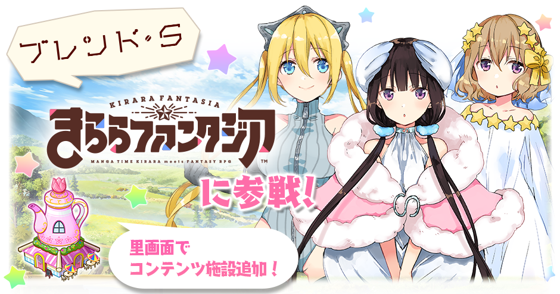
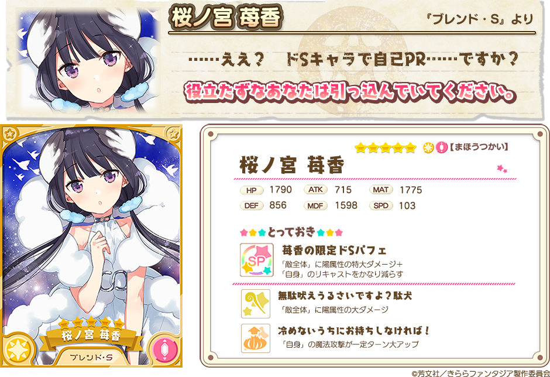
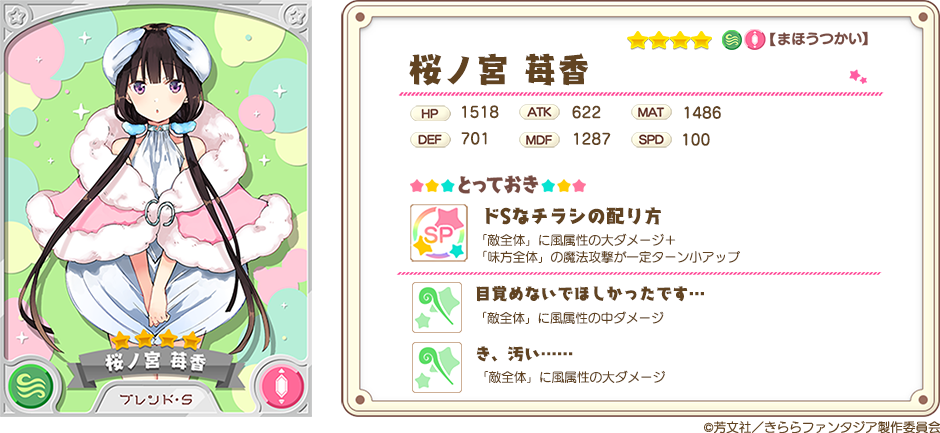
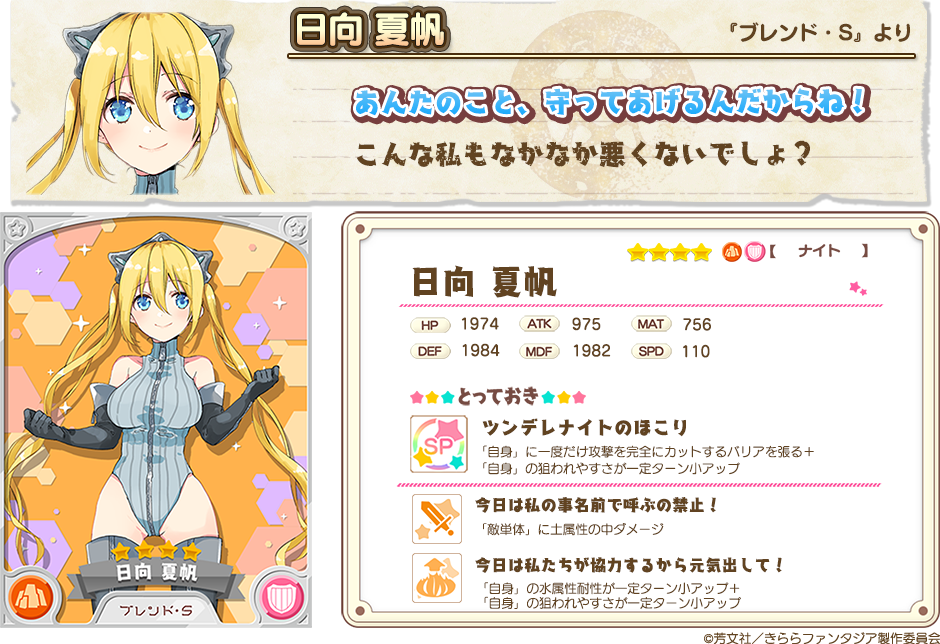
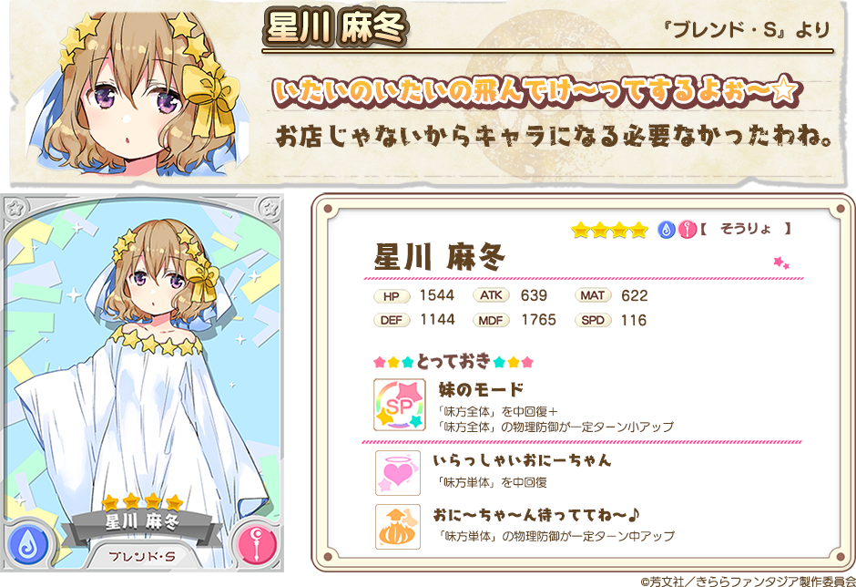
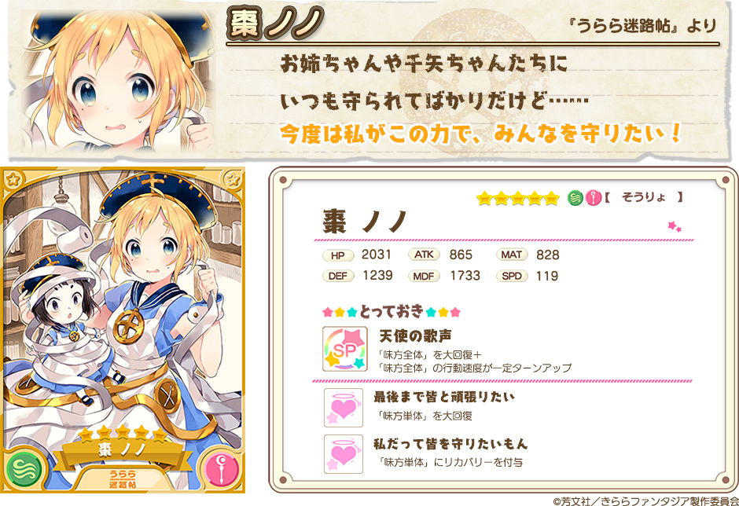
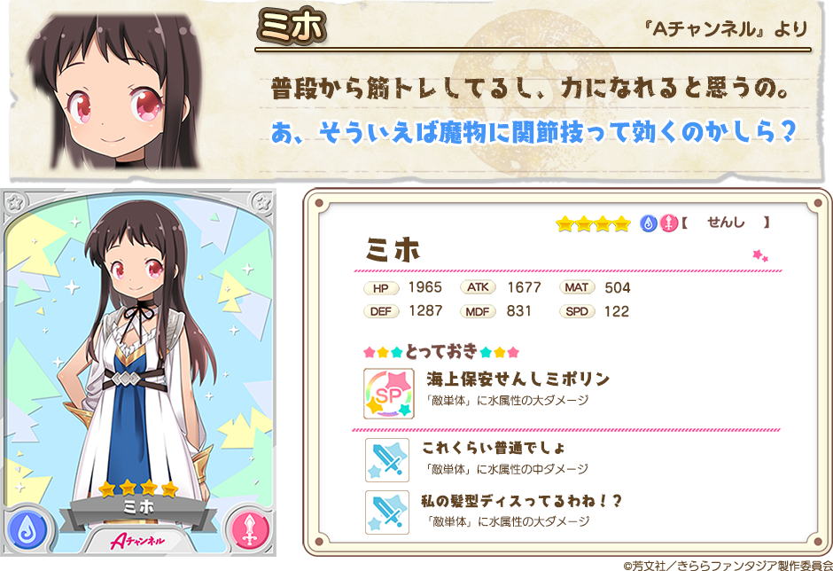

『きららファンタジア』をご利用いただき、誠にありがとうございます。
1月10日17:30より、新イベント「スティーレ 2号店オープン！」で活躍するキャラクターが登場する「新規キャラクターピックアップ召喚」を開催中です。
2018年1月10日 17:30 ～ 2018年1月19日 13:59
・10回召喚では★4以上のキャラクターが1体以上確定します。
・初回のみ星彩石300個で10回召喚が可能です。
・本召喚では、下記ピックアップ対象の提供割合がアップしています。

『きららファンタジア』に、「ブレンド・S」が新規参戦！
苺香・夏帆・麻冬が新規キャラクターピックアップ召喚に登場します。
さらに、「ブレンド・S」のコンテンツ施設「スティーレ2号店」が追加されます。
「スティーレ2号店」は新規キャラクターピックアップ召喚と同時に里で建設可能になります。




また、★5「うらら迷路帖」ノノが新衣装、★4「Aチャンネル」ミホが初登場でピックアップ対象として追加されています。


※表示されているキャラクターイラストは進化前のものです。
※表示されているステータスは、進化前キャラクターの最大Lv（限界突破4回）時のものです。
さらに★3 桜ノ宮 苺香（そうりょ）、★3 日向 夏帆（せんし）、★3 星川 麻冬（ナイト）も召喚に追加されています。
※ ★3 桜ノ宮 苺香（そうりょ）、★3 日向 夏帆（せんし）、★3 星川 麻冬（ナイト）も新規キャラクターピックアップ召喚のピックアップ対象となります。
・提供割合の詳細はゲーム内の召喚画面＞提供割合からご確認ください。
・ピックアップ対象のキャラクターは同じレアリティの他のキャラクターよりも提供割合が高く設定されています。
・キャンペーン内容は予告なく変更になる場合がございます。ご了承ください。
今後とも『きららファンタジア』をよろしくお願いいたします。